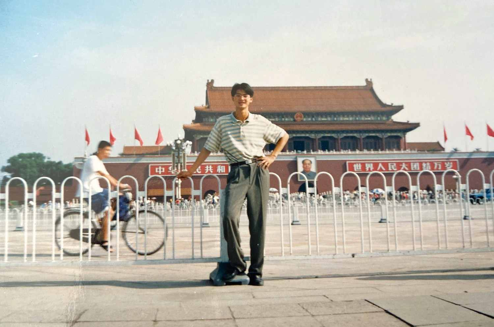
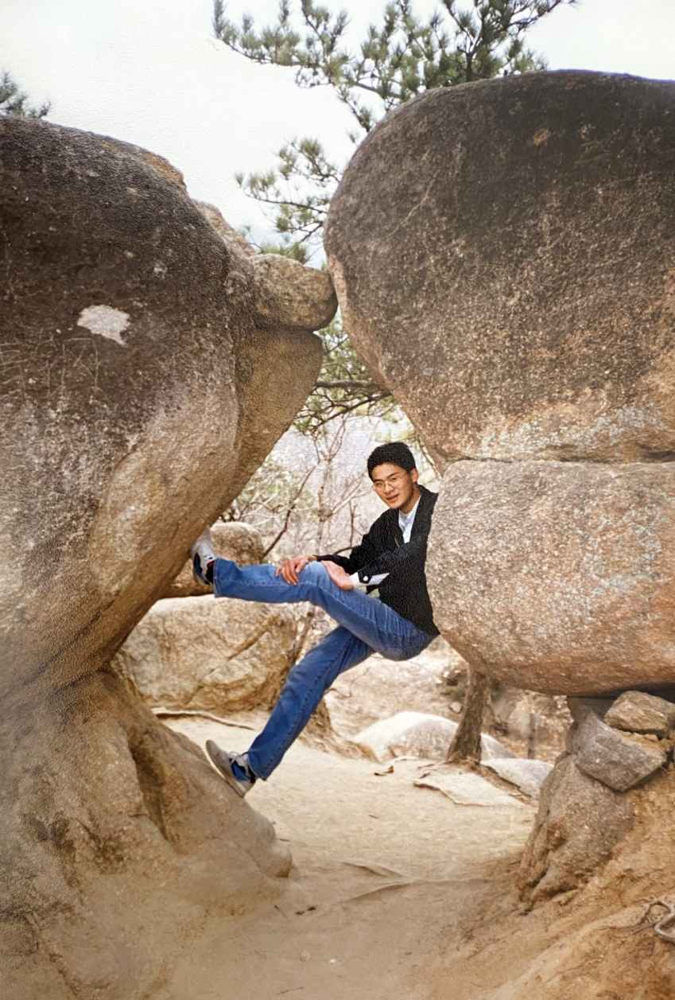
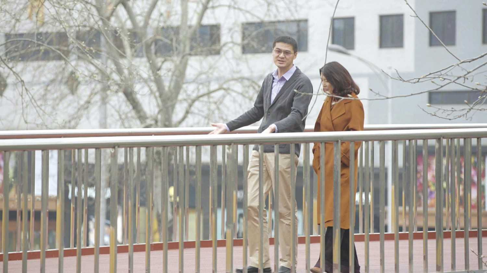
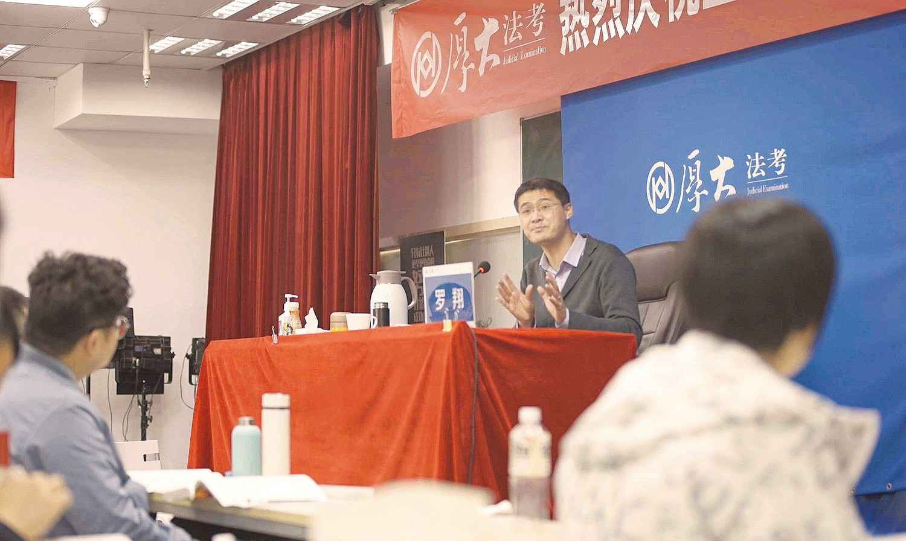

2021年6月7日 腾讯新闻《我的青铜时代》访谈
陈——陈晓楠；罗——罗翔
陈：很多人问我什么是青铜时代，对于游戏玩家来讲，“青铜”意思就是新手，而很多人知道的，罗丹的那个著名的雕塑作品“青铜时代”，它的意思是人类觉醒、摆脱蒙昧。
在我的理解当中，青铜时代或许也可以解释成是一个人最初认清自我，也认定未来道路的那个重大的人生时刻。
其实我们的少年和青春时期真的很像一块橡皮泥，在痛苦和梦想当中揉捏成各种样子，而青铜让我们的人生第一次有了金属的质感。
陈：听说小炒黄牛肉，是您的名菜？
罗：我会炒，我们湖南菜得足够辣！
陈：小时候，你爸妈是不是也经常做这菜？
罗：对啊，小时候是经常做，但是小时候呢，觉得父母很奇怪，父母喜欢吃芹菜，不喜欢吃肉。后来才发现，他们把肉主要给我吃。
陈：然后跟你说的是“我就爱吃那个”。
罗：对对，好像天下父母都那样。所以就是感觉到越是免费的东西越是宝贵的，像阳光、空气、父母的爱，这些都是钱买不到的。
陈：在你生长的那个地方是什么样的县城？
罗：我们是一个很小的县城，在湖南省的南部。我们那条街就叫五一路，是一条主街，主要就是围着这条街建的，有一条河叫耒水。
陈：你小时候是独生子女，是吧？
罗：对啊。那时候非常罕见，那时候因为孤独，所以我有的时候会请乞丐到家里来，给他们倒水，给他们吃的，弄得我爸妈非常生气。我估计他们心里肯定是很烦的，但是他们还是会给他做个饭。
陈：但是他们完成了一个孩子自己觉得对别人的善意。
罗：现在你会发现那种善意，其实主要还是一种抽象意义上的。因为责任不是你来承担，责任是由别人来承担，但你享受了那种“你感觉做好事”的那种快感，但责任你没有承担。
陈：那当时，小县城里真正走出去的人多吗？
罗：很少。我们那个时候，可能像我们这种县城的年轻人就是两条路，一条是北上，一条是南下。北上的可能主要是读书，南下其实主要就是去打工。我的很多同龄人就是去广东打工。
陈：有很多人的命运慢慢就跟你分岔了，是吧？
罗：初中那时候贪玩，我有个朋友成绩特别好。我记得暑假的时候，去他家就经常找不到他，他爸妈说他病了。开学了还没来，后来才了解到他不是病了，是被抓了，那时候他才十四岁多一点。社会上的混混去抢劫，让他去望风，然后他就去了，后来就被抓了。有的时候想，如果他那天叫我去，我会不会去望风呢？我现在肯定是不会，但是回想到那个时间点，我不敢想象。所以人生很多特殊的时间节点，你只能把它归结于命运。
陈：当这些往事跳出来的时候，就这种命运感，会让你有什么感觉？
罗：敬畏、惶恐。就是让你觉得你要演好现在所演好的剧本，因为它本来都不属于你，像很多我这个年纪的去南下打工，非常地辛劳，甚至还有些人都已经不在人世。
陈：这种敬畏会让你觉得，就是命运给你的东西，你要好好攥住。
罗：那肯定，因为这一切是你所不配的，所以要回馈。
陈：这个就特别有典型的小镇青年，天之骄子这种感觉哈，一路开挂了，一下子考到北京。
罗：我第一次到北京，觉得好大。当时，来宿舍第一天晚上，我就买了几瓶啤酒。我说：“来，初次见面我们晚上……”

陈：你那个不安分的少年又（出来了）。
罗：对呀，我本身就是一个不怎么循规蹈矩的孩子，只是因为被管束着。到了大学，放浪形骸，率性而为。经常和同学喝酒，放声歌唱，还会骑着自行车绕着北京城转，甚至还会骑到天安门广场。有一次骑自行车去的时候，胎都没气了，我也坚持骑到了。
陈：哈哈哈，那时候你们在唱什么呀？
罗：《海阔天空》，粤语歌。虽然我在广东的同学面前不唱粤语歌，但是在别的同学（面前）唱粤语歌，是完全能唬住他们的。
我们那个时候还喜欢开湖南老乡会，我们互相抱怨，说其他省的人好蠢，辣椒都不吃，居然吃馒头不吃大米，这怎么搞的？！我们一直说，惟楚有才，于斯为盛。岳麓书院写“大江东去，无非湘水余波”。后来我续了一句，“大海东流，无非耒水涟漪”。就是你很狂妄的，而且很夜郎自大。

有一次开湖南老乡会，他们没叫我，我问：“为什么不叫我？”别人说：“今天开的是长沙老乡会，是省城老乡会，你又不是省城的，叫你干吗呀？长沙话你会说吗？”后来我问另一个长沙的同学：“他们今天怎么没叫你，你不长沙的吗？”他说：“别人今天是长沙市的老乡，我是长沙县的。”所以那时候，你就觉得自己真的是很愚蠢，用这种所谓的省际划分，划出来的优越感。
陈：瞬间也会崩塌。
罗：对，就简直是愚不可及。
罗：1999年在政法大学读研的时候，有一天，突然有人带来了一个很“奇特”的人，跟我们相比较，穿着就很破嘛，身上还有一些味道。（那人）说这是谁谁（室友）的老乡，晚上就睡我下铺。我说“可以啊”。后来才发现他是一个来寻求帮助的农民。我们就帮他去处理，帮他做法律援助。其实，我也不觉得我们帮了多少忙。我印象很深刻的是后来他离开我们宿舍了，就睡在学校地下通道里面。他不好意思（再继续睡在宿舍），那时候是冬天。
陈：虽然你们很热情，可是他觉得好像打扰到你们。
罗：对啊。最后我们说：“你赶快回去，你在这待着没什么（作用）。”然后我们借给他一点钱，他就回去了。
陈：那是你人生中第一次看到，一个在绝境中求助的人，是吧？
罗：以前经常就是偶尔空谈，空谈完之后喝得醉醺醺的，甚至抱头痛哭，但这些东西都很虚。现在，这是一个真真实实的一个人来到你们面前，而且当你看到了他的案件，你会发现法律是可以帮助他的，然后你就觉得很有意义。每个案件，它影响了一个人的一生，影响了一个人的一家。
陈：所以他是第一次把那个东西活起来了，就在你们面前。
罗：对。现在我闭上眼睛都能回想起，他当时进入我们宿舍那个狼狈，以及在地下通道突然看到他，那种震惊。还有最后，他含着泪说“我一定会还你钱的”。
陈：像您刚才说的，大家空谈的时候也会抱头痛哭，那个时候是一种什么样的心情状态？
罗：其实很矛盾的，一方面你还是对公平正义有很强烈的向往，但有的时候你有一种无力的感觉。你（觉得）可能也只是一种谋生的手段，非常非常的混乱，你没想通你就会不快乐。不快乐的时候会借助很多东西来暂时麻醉，放纵啊，喝酒啊，这些其实都是暂时麻醉来掩盖那种声音。我们就说你不要跟我谈对错，对错是价值。现在我们是中立的法律，我们推出结论，不管对错。我们只管结论的正当与否，正当的、合逻辑性的，所以在这种情况下，当你得出的结论严重地违背民众朴素的常情常感，你还会觉得很骄傲，（觉得）我们学法律还是有用的，得出的结论就跟你不一样。
陈：它又导出了一种优越感。
罗：对啊，知识的优越感。就是你会觉得这种东西，有一种专业性的槽，一般人是不应该进去的，我们是有法言法语的，一般人是不懂的。
陈：那个时候，用什么来评判学法律方面的这种精进的段位？
罗：就是你会用很多老百姓听不懂的话来描述本来三两句话就能说清楚的东西。有的时候会满足自己对知识的优越感和所谓的怜悯心、同情心吧。因为人越是喜欢探讨抽象概念，人越是觉得自己崇高。因为你越觉得抽象的人可爱，你就会越觉得身边的人不可爱。因为忙着爱人类，以至于没有时间爱具体的人。

罗：2003年吧，在北大读博士的时候，也是冬天，我从双安商场这个天桥走到对面，然后就看到一个衣衫褴褛的老太太，灰白头发，到处在问人，大家都爱理不理。
后来我就走过去了。她问我某某援助中心怎么走。我也不知道，她有点失望。我说：“你不用着急，我帮你查一查。”打114马上就查到了，援助中心就在这附近不远。我当时印象很深刻，她其实是从（裤子内侧）掏出一个小纸片，颤抖地记着（地址）。
我那个时候就感到很难受。她跟我说，她从北京西客站一路走过来，走到双安商场。你想一想那走了几个小时？然后没人理她，我觉得非常心酸，说：“我打车带你过去。”她当时听了这话“扑通”一声就给我跪下了。你想问个路，然后就给你跪下了。我当时是受到了极大的震撼。
陈：她一跪下，你也一下子就……
罗：对啊，现在（想到）就想哭嘛。我就赶快扶起她，打着车带她过去了。我当时也想听一下到底什么案件，因为我也已经考过律师执照了。但是在车上，我自始至终没有说出我的身份，说白了我还是有点担忧，也不想惹麻烦。
陈：就是那个话到嘴边了又憋回去。
罗：对，想说但后来没说。我印象很深刻，她走到援助中心，说：“真的很感谢你，就不用陪我上去了，别影响你的前途。”所以我最后就走了。现在回想起来都觉得很羞愧。
陈：她说怕影响你的前途的时候，你自己心里也咯噔一下。
罗：是啊，她说出了你的内心，她戳中了你的内心嘛。但是马上你就会觉得，其实你是用这种虚伪的道德优越感，来掩饰你内心。这件事情对我影响还是蛮大的，我就觉得真正的知识要从书本走向现实。真正的法律并不仅仅是抽象的逻辑，而是每一个人鲜活的故事。公平和正义不仅要在书上得到体现，更重要的是要在每个个案中得到回响。
陈：大学、研究生继而到后面教书，一路都特别顺利，是吧？
罗：我记得2008年那一天是我生日，获得我们学校的、我很看重的一个奖项“最受本科生欢迎的十位教师”。那个时候就更加的狂妄。
2009年在美国做访问学者的时候，在加州伯克利（大学）后面有一片山，很漂亮。我们想找一个野餐的地方，然后我开着车。那条路其实比较窄，我突然下意识地踩了一下刹车，我也不知道为什么踩了一下刹车。突然发现一个轮胎已经在悬崖上，就三个轮胎在道上，一个轮胎在悬崖前空悬。其实正常人的反应，在这种情况会打一下方向盘。结果就在这一刹那，另外一辆车从旁边呼啸着过去了，也就是说那个时候，如果我打一下方向盘，也肯定被撞下去了。
那个悬崖也得有二三十米，摔下去估计（凶多吉少），事后你回想起来，才真正地意识到若非命运的庇护，你早就没了。你所有的梦想，你所有对人生的一些远大规划，都会烟消云散的，都只是一个笑话而已，只是当时你会做出不同的解读。
陈：越是这种惊险当中，你仍然运气好，说明命运就是把你选择了。
罗：那个时候依然是在狂妄的道路上一路狂奔，觉得所有的运气好都只是加持了你的狂妄。就是你应该这么狂，你值得这么狂。所有的碎片化拼出的一个图景，形成了你对它的认识，但有可能你拼错了。你拼出了一个错误的画，把头和脚拼错了。
刚开始上讲台的时候非常地狂妄，我觉得这个考试是一个非常低端的考试，很容易、轻轻松松就能过的，很狂妄，懒得搭理人，而且自认为也看了一些书。所以有的时候能够把对方说得哑口无言我也很开心。

陈：辩论的时候必须当那个最终的赢者？
罗：对啊，就有这种心理，就是咄咄逼人。
陈：所以那时候是虽然很狂妄，很有优越感，但内心深处并不是很幸福的感觉？
罗：不快乐，觉得自己是一个很虚伪的人，是一个很伪善的人。你总是瞧不起你自己，这是很内在的一个冲突。于是就仔细去回想这一生中所遇到的很多经历，很多重要时刻，你才恍然大悟，原来你就是一个很渺小的人。
陈：这个过程很痛苦吗？
罗：很痛苦，因为它相当于整个人生观、世界观的一个根本性的转向。有的时候，回忆并不是令人愉快的一些事情。确实非常地感恩，有很多事情不断地提醒你，人应该谦虚，人应该谦卑，人应该走出自己自大、自恋，那种偏见的洞穴。
陈：至今想到那时候会是什么感觉？就是你人生中的一个分水岭吗？
罗：应该算，至少比我2020年莫名其妙走到聚光灯下要重要得多。
陈：那你那一年，在外人看起来精神状态是什么样？
罗：会觉得你有变化了。首先你不再爱参加聚会了，你聚会中也不再爱高谈阔论了，喝酒也明显喝少了。
陈：那还是像变了个人似的。
罗：稍微变了，大家觉得你没有以前那么有趣了。
陈：那你自己心里呢？
罗：我心里觉得很有趣。最重要的是做你觉得正确的事情，最重要的是你听不到内心对你的抱怨，最重要的是多年以后的你能够看得起现在的你。
罗：我上课有的时候会讲一些段子，但是幽默不是为了幽默而幽默，而是为了让大家感受到背后故事的沉重。
陈：其实讲法考没必要讲这么多东西啊。
罗：如果我们只需要培养出技术主义的人才，似乎没有必要。但是我始终是觉得，他们要去思考：“我为什么要从事法律职业？”“法律职业真的只是我的谋生的工具吗？”“能不能够有一些更宏大的支撑？”“能不能够跟人类千百年来关于法治的传承的这根电线来接通呢？”我想告诉他们意义，让他们知道投入那么多的时间，那么多的精力是值得的。
有一次去看守所会见的时候，看守所的民警说“我看过你的讲座”，也有一些警察朋友、检察官朋友、法官朋友会给我发信，说我当时讲的一些东西深深地鼓励了他们。我相信这些东西会让他们去思考，人类为什么会有法律，我们为什么需要法治，让他们心中能够长出这种根。
陈：后来是法律界以外的年轻人们也都看了。
罗：所以很感恩嘛，确实很感恩，我总是会跟十七八岁的人在一起，从他们身上能够看到热情，能够看到希望。然后你在年轻人的话语中，也会学到很多新的话语体系。
陈：您现在对未来有什么终极的目标或者梦想？
罗：过好每一天，演好当下的剧本，朝着心中的标杆去前进。
陈：每一天都过得踏实。
罗：对。人要做到不清高、不矫情、不抱怨。
陈：当时穿越了那个最迷茫和困惑的时候，慢慢就好像找到了这个光的感觉，是吗？人就踏实下来，就有这样一个过程？
罗：对啊，就是在黑夜中看到了微光，你就朝着微光的方向走过去，虽然有的时候你会怀疑是不是走错了。但是所有的怀疑都是为了确信。
陈：可能越来越多的年轻人，在非常大的竞争中面临这样的困惑：我得赢，我需要找到非常多可以赢的办法。以前老说的“我要忠于我自己”，现在要妥协非常多的事情，我要避免被淘汰。你会怎么样跟学生说这些事情？
罗：那就是如何过看起来好的一生。你就要定义什么叫做“好”。这个世界上有太多关于好的标准。good如果加个s就变成了goods，就变成了商品。做一件事情最重要的就是赚钱吗？什么叫好医生？赚钱就是好医生。什么是好老师？赚钱就是好老师。什么是好记者？赚钱就是好记者。这样做，那一切职业分工没有意义了。你要去寻找什么叫good，然后你才可以去过good的一生，你才可以避免随波逐流，你内心才会拥有一种笃定，你才会拒绝跟别人去攀比，也拒绝被别人所攀比。
陈：甚至是一辈子都要去追寻那个good的定义是什么。
罗：对。我们要对焦，但你的对焦点太多了，你能对焦到一个good吗？
陈：在这个流量的时代，人突然站在流量的桥头，然后流量可能再过一阵，又会退去的时候，人会有震荡吗？
罗：那肯定会有。
陈：你怕被忘了吗？
罗：我觉得被忘了是一个必然，还是爱比克泰德所说的“对于不可控的事情，我们保持乐观；对于可控的事情，我们保持谨慎”。可控的事情，就是你现在有一些小小的影响，你别滥用，别得意忘形。对于不可控的事情，你抱着乐观的心，接受一个开放性的选项。
陈：你最希望被记住的，如果说只有一个身份能被记住，是什么？
罗：老师。